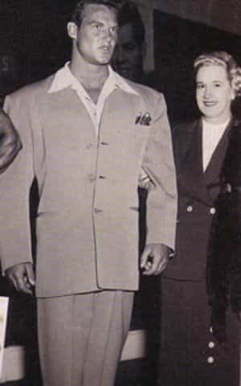
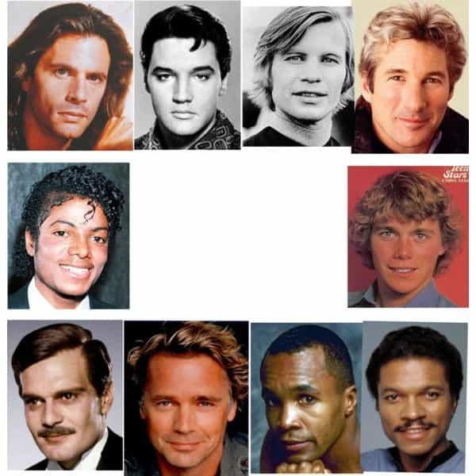
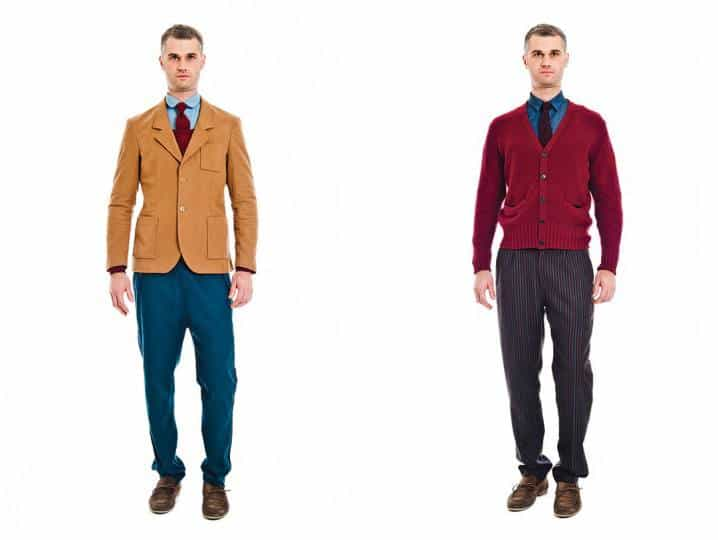
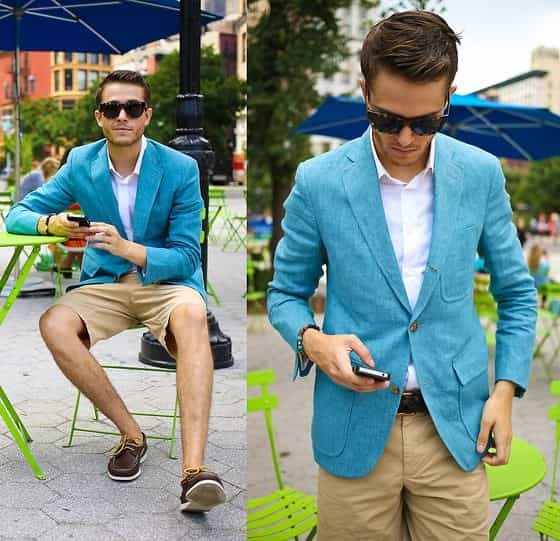

< < < Back
A Beginner’s Guide To Dressing Well – Return Of Kings
Just so we get this out of the way, I am absolutely not going to tell you to “peacock” or “pick an accessory that carries your outfit” or “wear a beaver cock around your neck”, or any of that Mystery Method crap that most intelligent people have realized is a scam.
There are no “ONE SIMPLE TRICK”s in life, and dressing well is no exception. Instead, what I’m going to do is give you a broad framework of how you can choose your own accoutrements to dress well. And yes, “choosing your own” is very important:
The key is to figure out what colors, patterns, and fits are best for YOU. In the long run, this will save you money, since well fitting clothes will never stop fitting you (unless your body drastically changes, which it shouldn’t if you read my other articles on fitness and nutrition).

A man’s style is influenced by three things:
1. His physical person
2. Color and fabric matching and contrasting
3. His personal preferences, the setting he’s going to, etc.
To go into more detail…
Cut And Fit Are The Most Important
Nothing is more important in dress than having the clothes be cut right, and fit properly. You can have the most expensive designer clothes in the world, but if it’s cut too big you’ll look like a child wearing his daddy’s clothes, and if they’re too small you’ll look like a walking package of hot dogs.
Proper fit is defined as clothes that are comfortable but not loose and baggy. Using the men’s suit as the starting point of men’s style, we see that the goal for all men and body types is to create a streamlined silhouette from head to toe, enhancing the masculine traits (namely chest and shoulders) to a proportional extent, while minimizing the belly and legs—again to a proportional extent. You want to avoid looking like Steve Reeves wearing a suit, and muscular men can have their “drop”—which is to say, the difference in chest and waist circumference—downplayed.

Different body types need different cuts, patterns, and fabrics to accent and downplay various traits:
- Tall, thin people want to wear checked patterns to give the illusion of “meat”, thick “chalk stripes” also work, and wear large pants cuffs.
- Short and stout men want to wear thin vertical lines and avoid patterns.
- Large and fat men—defined as a waist bigger than the chest and shoulders—want to wear a jacket that drapes and has padded shoulders, as well as choosing suspenders over a belt as the latter creates a big horizontal line that draws attention to the gut.
- Muscular men, defined as having a chest that is 10 inches or more than the waist, should downplay their musculature by having minimal shoulder padding, and large lapels to counterbalance the large chest. The waist should not be suppressed, and a jacket can be slightly longer than usual, to hide the thin waist.
And that’s just scratching the surface!
Complexion
You should take care to dress in a way that enhances your natural complexion. Beyond the old reliable white dress shirt, a man’s skin tone and hair color affect what shirts he should wear. Eye color is a “wild card”, if it contrasts the hair and skin it can introduce shirt colors that otherwise wouldn’t work. It is the relationship between these three factors that determines whether a man is high, low, or medium contrast.

High contrast: Pale skin and dark hair/eyes, or dark skin and light hair/eyes. This color difference should be matched in the clothing, such as the classic black suit and white dress shirt, or a grey suit and blue dress shirt. Dark shirts and white suits can also work.
Low contrast: men with muted appearance: dark skin and dark hair, or light skin and light hair. Also bald men. They should seek a muted color spectrum, such as light gray or tan suits, with light shirts—earth tones are great!
Medium contrast: Swarthy men with dark hair, and white men with grey hair. Most men are not strong medium contrasts, they tend to a high or low. To put it simply, swarthy and dark hair can be outfitted like the high contrast man, and the greying pale man should tend to low contrast.
Color Matching
There’s a lot that can be said about it, and I’ll save that for another time. For now, realize that you can be quite successful with only a rudimentary understanding of color theory:
You want to avoid having all matching colors—i.e., do not wear a blue suit, blue shirt, and blue tie. The key is to choose COMPLIMENTARY colors. Black-white-black works fine.

Similarly, don’t wear all matching fabrics—don’t wear a silk suit, shirt, and tie. Contrast smooth and rough fabrics.
The Setting
Simply put, you have to dress for the occasion—if you’re partying on some guy’s yacht, you don’t wear a tuxedo. And if you’re going to a funeral, you have to dress in a subdued manner. I hope I don’t have to tell you that you shouldn’t rock an orange pocket square when you’re paying your respects to your dead Grandma. Color choices also change depending on the season—darker colors are best worn in cold weather, and lighter colors for warm weather.

Conclusion
Clothes are an issue that can be solved with common sense in most cases, but only to the level of “decent”. This article achieves that, but to truly be well-dressed requires more in-depth study of tailoring, fabric type, color theory, and of course your own body. And those articles will undoubtedly come in the future.
Read More: 8 Solid Day Game Tips For Beginners